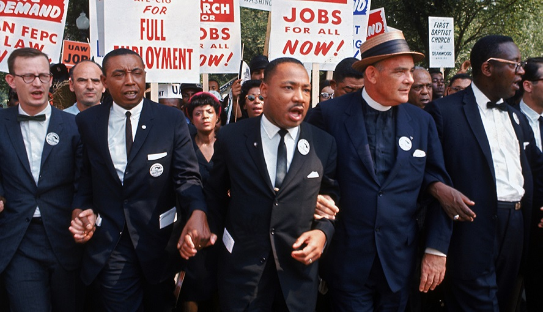
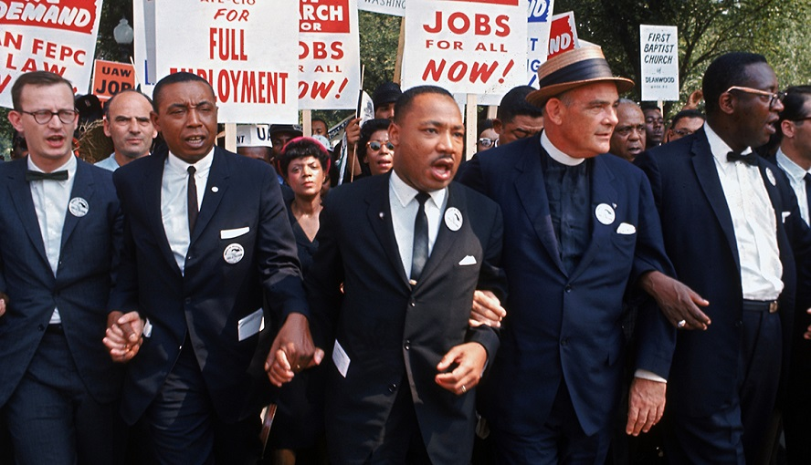
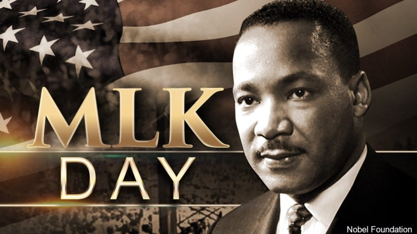
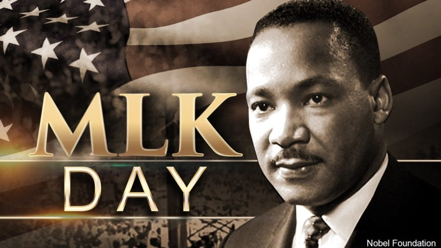
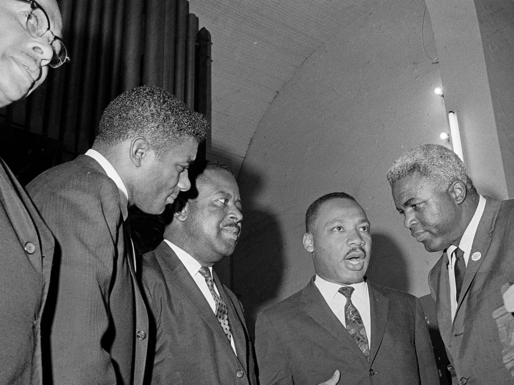
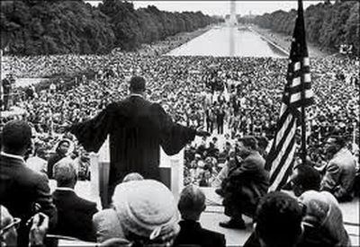
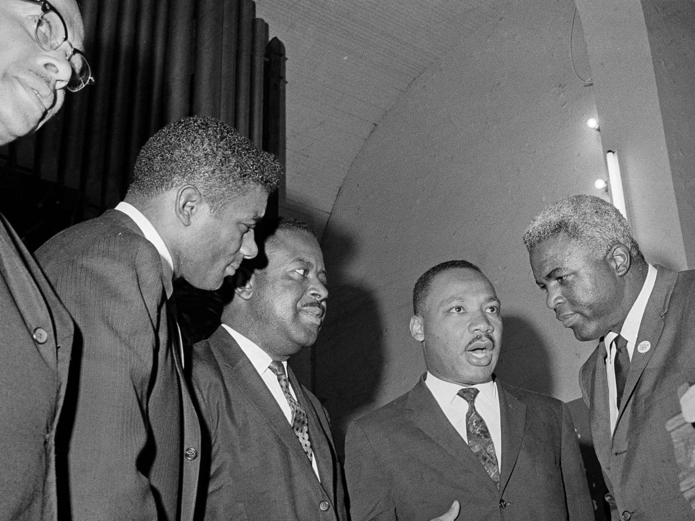
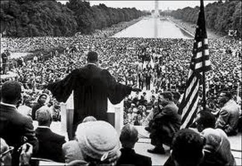
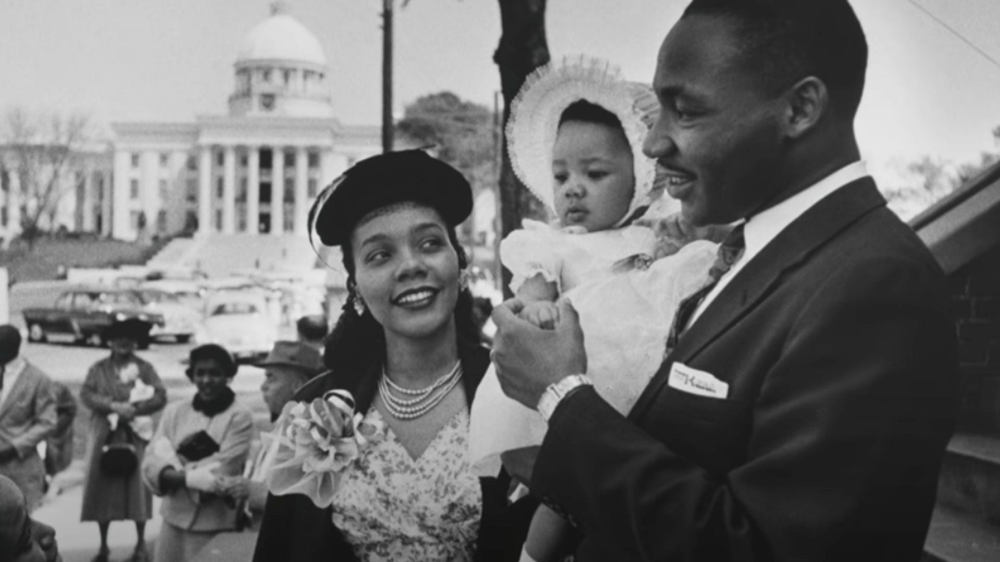
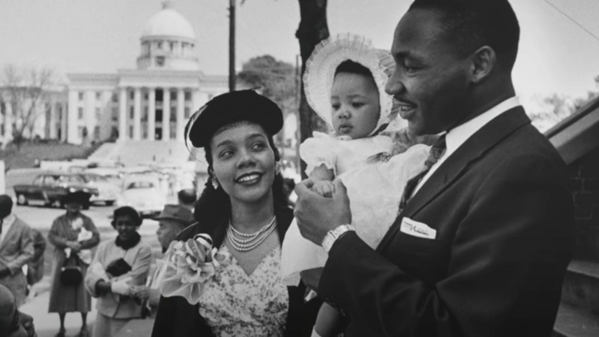

Martin Luther King Jr.
 

 

 



 

1st President of the Southern Christian Leadership Conference
Born Michael King Jr. January 15, 1929 Atlanta, Georgia, U.S.
Died April 4, 1968 (aged 39) Memphis, Tennessee, U.S.
Cause of death Assassination by gunshot
Resting place Martin Luther King Jr. National Historical Park
Spouse(s) Coretta Scott (m. 1953)
Children YolandaMartinDexterBernice
Parents Martin Luther King Sr. Alberta Williams King
Relatives Christine King Farris (sister) Alfred Daniel Williams King (brother) Alveda King (niece)
Education Morehouse College (BA) Crozer Theological Seminary (BDiv) Boston University (PhD)
Occupation Baptist ministeractivist
Known for Civil rights movement, Peace movement
Awards Nobel Peace Prize (1964) Presidential Medal of Freedom (posthumously, 1977) Congressional Gold Medal (posthumously, 2004)
Memorials Martin Luther King Jr. Memorial